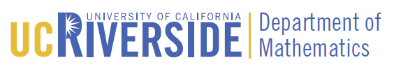

MathConnections 2019
May 18, 2019
University of California, Riverside
University of California, Riverside
| Home | Registration | Program | Directions | Flyer |
MathConnections is a free mathematics conference organized by graduate students, for graduate students. Its goal is to bring together graduate students from Southern California and surrounding areas. Each year the conference features a special session on the interplay between two or more areas of math. The theme of this year’s special session is Geometry, Representation Theory, and Category Theory.
The conference will consist of 20 minute talks given mostly by graduate students, and two plenary talks from invited speakers. This year’s invited plenary speakers are Andrew Manion of USC, and John Baez of UC Riverside.
To register to attend MathConnections, visit the registration page. Registration is free, and lunch will be provided. If you’d like to submit an abstract to give a talk, also visit the registration page (use the same form to submit an abstract and register to attend). We’ve extended the deadline and are accepting abstracts until May 4. Women and members of other underrepresented groups are especially encouraged to apply. If you’d like to request a parking pass, register before May 10. Any questions you have can be directed to Ethan Kowalenko at mathconn@math.ucr.edu.
MathConnections is being organized by these graduate students: Ethan Kowalenko (Lead Organizer), Jonathan Alcaraz, Paige Helms, Matthew Overduin, Mike Pierce, Xavier Ramos Olivé, and Christian Williams. The organizers are grateful for support from the following sponsors:
|
|
 |
| UCR Math | © 2019 MathConnections Organizers |